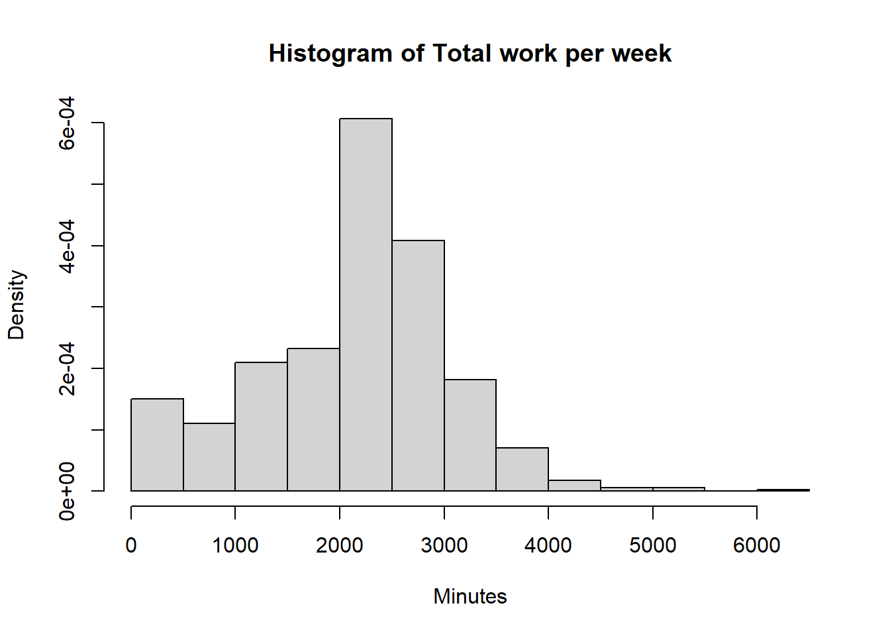
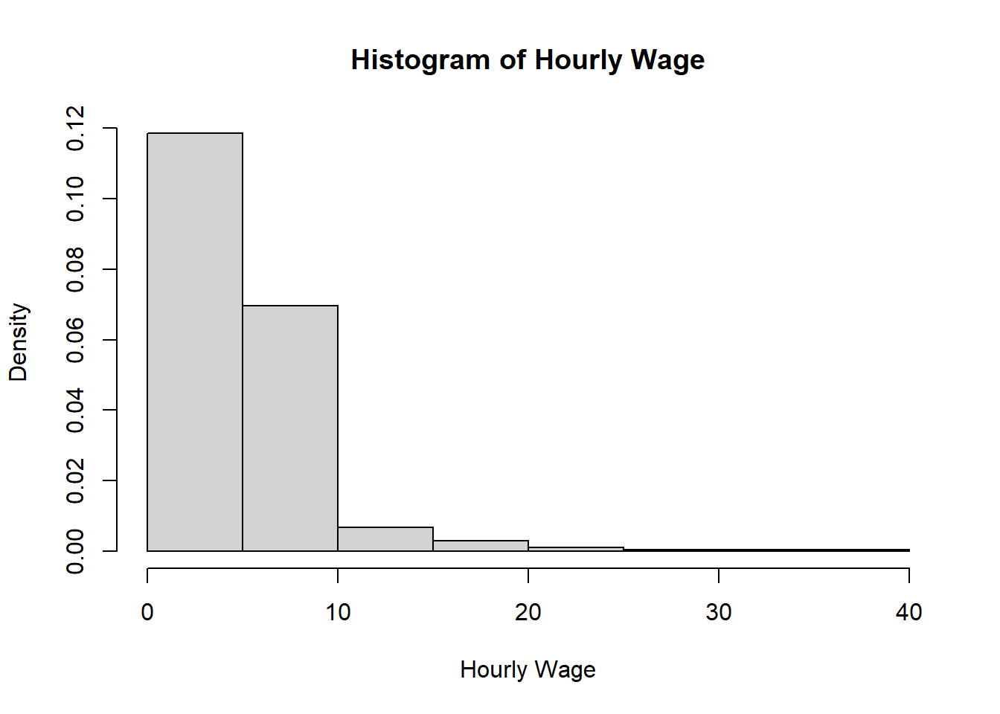
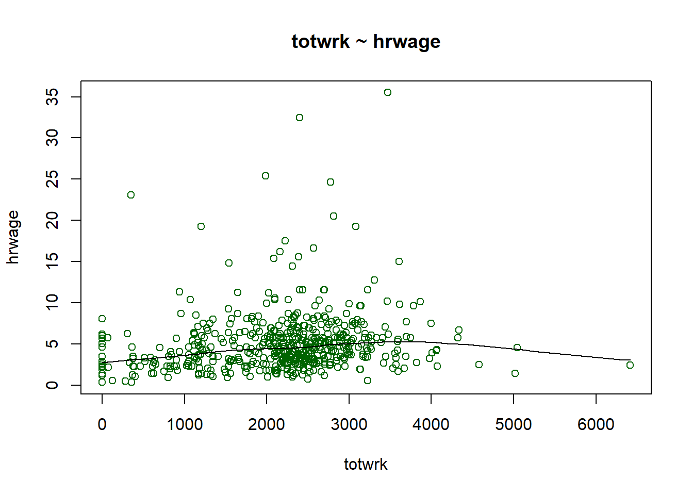
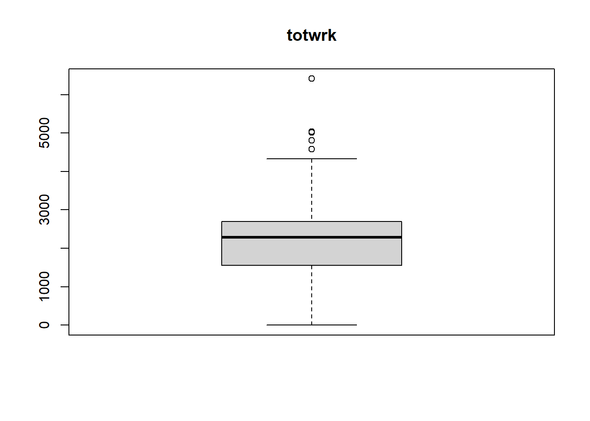
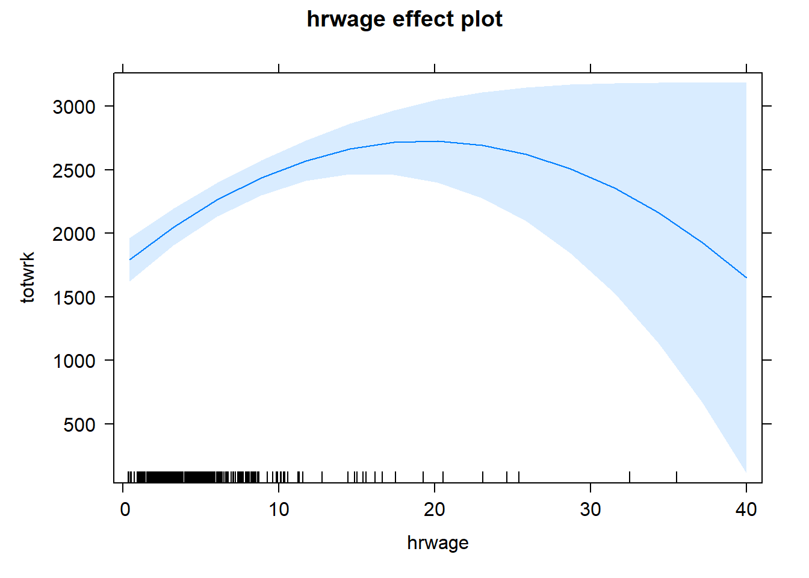

#Abstrak
Penelitian ini bertujuan untuk mengetahui pengaruh upah per jam terhadap total jam kerja individu. Data yang digunakan adalah data cross-section dengan jumlah sampel 706 individu pada tahun 1975, data ini tersedia di buku Wooldridge. Analisis data menggunakan regresi OLS linear berganda. Hasil menunjukkan pengaruh upah per jam memiliki pengaruh yang signifikan dan tidak linear terhadap total jam kerja. Hal ini berarti sebelum titik maksimum, pengaruh dari upah perjam terhadap total jam kerja adalah positif. Setelah titik maksimum, pengaruhnya menjadi negatif. Hasil penelitian ini sesuai dengan teori penawaran tenaga kerja.
#Introduction
Sebagai salah satu faktor produksi baik di perusahaan atau perekonomian, sumber daya manusia memiliki peran yang penting. Karakteristik sumber daya manusia sangat beragam dan jumlah perusahaan yang juga semakin meningkat, hal ini menyebabkan adanya persaingan perusahaan - perusahaan untuk bisa mendapatkan pekerja. Pekerja dengan total jam kerja yang tinggi akan membantu perusahaan untuk mencapai profit maksimum. Tentu saja apabila membahas jam kerja para pekerja, bahasan mengenai upah akan selalu membersamai. Oleh karena itu, faktor upah menjadi penting dibahas pengaruhnya terhadap total jam kerja para pekerja.
Pertanyaan dalam penelitian ini adalah bagaimanakah pengaruh upah terhadap total jam kerja para pekerja. Variabel dependen yang di proxy kan dengan jumlah jam kerja (totwrk) yang dihabiskan oleh seorang pekerja dalam seminggu (dalam menit). Sedangkan upah per jam (hrwage) para pekerja merupakan variabel independen. Selain itu, variabel waktu santai (rlxall), kesehatan (gdhlth), usia (age), pendidikan (educ) juga dimasukan kedalam model sebagai variabel kontrol.
Dengan mempertimbangkan teori mengenai penawaran tenaga kerja dan teori pengaruh upah terhadap jam kerja ( Teori alokasi waktu), maka dalam model dibentuklah formasi kuadratik pada variabel upah per jam pekerja. Dengan begitu tujuan penelitian dapat tercapai. Hasil penelitian menunjukan adanya pengaruh yang signifikan dan non-linear upah per jam pekerja terhadap total jam kerja pekerja, hal ini berarti pengaruhnya bersifat positif dan setelah melewati suatu titik maksimum hubungannya menjadi negatif, hasil penelitian menjadi relevan dengan teori yang ada.
#Theoritical Framework
##Penawaran Tenaga Kerja
Penawaran tenaga kerja dipengaruhi oleh keputusan seseorang apakah ia mau bekerja atau tidak. Keputusan ini tergantung pula pada tingkah laku seseorang untuk menggunakan waktunya, apakah akan digunakan untuk bekerja atau untuk kegiatan lain yang sifatnya lebih santai (konsumtif) atau bisa pula kombinasi keduanya. Apabila dikaitkan dengan tingkat upah, maka keputusan untuk bekerja seseorang akan dipengaruhi pula oleh tinggi rendahnya penghasilan seseorang. Apabila penghasilan tenaga kerja relatif sudah cukup tinggi, maka tenaga kerja tersebut cenderung untuk mengurangi waktu yang dialokasikan untuk bekerja. Hal tersebut menyebabkan bentuk dari kurva penawaran membelok ke kiri atau dikenal dengan backward bending supply curve.
Pertanyaan penelitian ini yaitu untuk mengetahui pengaruh upah terhadap total jam kerja. Argumentasi kami yaitu tingkat upah yang tinggi akan memberikan dampak pada peningkatan total jam kerja, karena pemberian upah yang tinggi dapat memberikan motivasi kerja yang tinggi juga bagi pekerja sehingga dapat memenuhi kebutuhannya secara manusiawi. Dapat dikatakan bahwa hubungan tingkat upah dengan total jam kerja adalah positif.
Namun, harus dilihat juga teori ekonomi mengenai alokasi waktu dalam teori pasar tenaga kerja. Dalam teori alokasi waktu, ketika terjadi peningkatan upah maka terdapat dua pilihan yang dapat diambil oleh individu, yaitu ia akan memilih untuk meningkatkan konsumsi dan menikmati waktu luangnya atau meningkatkan alokasi waktu kerja nya. Hal ini lebih dikenal dengan nama efek pendapatan dan efek substitusi (Substitution Effect dan Income Effect) dari perubahan upah. Efek substitusi akan cenderung meningkatkan jam kerja karena pendapatan pengganti individu untuk waktu luang, yang sekarang relatif lebih mahal. Di sisi lain, efek pendapatan akan cenderung mengurangi jam kerja karena individu menggunakan daya belinya yang meningkat untuk membeli lebih banyak waktu luang. Sehingga jika dikaitkan dengan teori ekonomi mengenai teori alokasi waktu, hubungan tingkat upah dengan total jam kerja bisa positif atau negatif tergantung individu dalam menyikapi perubahan tingkat upah.
Menurut penelitian terdahulu yang dilakukan oleh Rahmi Dewi (2018) dengan judul “Faktor-faktor yang Mempengaruhi Curahan Jam Kerja Tenaga Sektor Informal di Kota Pekanbaru” menunjukan bahwa tingkat upah berpengaruh negatif terhadap curahan jam kerja tenaga kerja sektor informal Di Kota Pekanbaru. Semakin naik upah, maka tenaga kerja akan memilih mengurangi jam kerja nya karena dengan upah yang mereka peroleh sudah bisa mencukupi kebutuhannya. kemudian hasil penelitian lain yang dilakukan oleh Murtiningsih dengan judul “Analisis faktor yang mempengaruhi jam kerja para pekerja di provinsi Jawa Tengah 2003 (analisis data sakernas 2003)” menunjukan hasil yang berbeda yaitu tingkat upah berpengaruh positif terhadap jam kerja. Semakin tinggi upah akan berpengaruh terhadap peningkatan jam kerja.
Keputusan individu sangat bergantung pada batas tinggi rendahnya tingkat upah yang sedang berlaku. Dalam model, kami membentuk formasi kuadratik pada variabel upah per jam. Karena hal ini selaras dengan kurva penawaran tenaga kerja dimana individu ketika telah mendapatkan tingkat upah yang tinggi, maka pada titik tertentu individu tersebut akan mengurangi jam kerja nya atau arahnya menjadi negatif.
Kesehatan individu menjadi faktor yang penting dalam memberikan kontribusi bagi pekerjaannya. Individu yang rentan terhadap keluhan kesehatan, maka jam kerja yang dapat dijalankan tidak sebanyak individu yang tidak memiliki keluhan kesehatan. Sehingga dalam model ini kami memasukkan variabel dumi yaitu bernilai 1 jika sehat dan 0 jika tidak sehat sebagai variabel kontrol atau variabel yang dikendalikan sehingga pengaruh variabel bebas terhadap variabel terikat tidak dipengaruhi oleh faktor luar yang tidak diteliti. Sehingga hubungan kesehatan dengan total jam kerja adalah positif.
Karena masing-masing individu memiliki pilihannya sendiri terhadap jam kerja atau waktu santai yang akan dipilih sesuai dengan yang telah dijelaskan sebelumnya, maka dalam model ini kami memasukkan rlxall (waktu santai) sebagai variabel kontrol. Ketika individu mengkonsumsi waktu luang, maka total jam kerja nya akan berkurang sehingga hubungan waktu santai dengan total jam kerja adalah negatif.
Tingkat umur seseorang juga dapat mempengaruhi total jam kerja yang dijalankan. Semakin bertambahnya usia, total jam kerja yang dijalankan akan semakin sedikit karena kelelahan akan semakin cepat terjadi. Jika jam kerja melebihi kemampuan lama kerja tersebut maka akan menurunkan efisiensi dan efektivitas pekerjaannya. Sehingga hubungan umur dengan total jam kerja adalah negatif. Dan dalam model ini kami memasukkan age (umur) sebagai variabel kontrol.
Pendidikan juga dapat mempengaruhi tingkat produktivitas sumber daya manusia. Lama nya pendidikan yang ditempuh dapat meningkatkan nilai tambah atau kualitas sumber daya manusia. Hal ini dapat terjadi karena pendidikan yang dijalani seseorang dapat meningkatkan kemampuan dan keterampilan serta wawasan yang lebih luas, yang kemudian jam kerja juga akan meningkat hasil dari kemampuan yang didapatkan selama bersekolah. Dapat disimpulkan hubungan lamanya bersekolah atau menempuh pendidikan dengan total jam kerja adalah positif sehingga dalam model ini kami memasukkan lamanya bersekolah sebagai variabel kontrol.
#Empirical Strategy
Model estimasi sebagai berikut:
Dimana yi mengambarkan variabel dependen yaitu total jam kerja individu i, xi merupakan variabel independen utama yaitu upah perjam individu i, dan Z merupakan kumpulan variabel kontrol yang terdiri dari dumi 1 jika sehat, waktu santai, umur, dan lamanya sekolah dari masing-masing individu, dan ui merupakan error terms. Sesuai dengan teori yang telah dipaparkan di bab 2, kami berekspektasi bahwa β1 memiliki pengaruh positif terhadap yi atau upah perjam memiliki pengaruh positif terhadap total jam kerja. Namun, dengan adanya teori backward bending labor curve pada teori penawaran tenaga kerja, kami juga berekspektasi bahwa pada titik tertentu β1 akan berpengaruh negatif terhadap yi. Sehingga kami menggunakan bentuk kuadratik pada variabel upah per jam (hrwage). Sementara itu, ekspektasi hubungan variabel kontrol dengan variabel dependen yaitu, variabel dumi yaitu 1 jika sehat berpengaruh positif terhadap total jam kerja, waktu santai berpengaruh negatif terhadap total jam kerja, umur berpengaruh negatif terhadap total jam kerja, dan lamanya bersekolah berpengaruh positif terhadap total jam kerja.
Estimasi model dari penelitian ini, sebagai berikut:
data(sleep75, package = "wooldridge")
sleeping <- as.data.frame(sleep75) head(sleeping)## age black case clerical construc educ earns74 gdhlth inlf leis1 leis2 leis3
## 1 32 0 1 0 0 12 0 0 1 3529 3479 3479
## 2 31 0 2 0 0 14 9500 1 1 2140 2140 2140
## 3 44 0 3 0 0 17 42500 1 1 4595 4505 4227
## 4 30 0 4 0 0 12 42500 1 1 3211 3211 3211
## 5 64 0 5 0 0 14 2500 1 1 4052 4007 4007
## 6 41 0 6 0 0 12 0 1 1 4812 4797 4797
## smsa lhrwage lothinc male marr prot rlxall selfe sleep slpnaps south
## 1 0 1.955861 10.075380 1 1 1 3163 0 3113 3163 0
## 2 0 0.357674 0.000000 1 0 1 2920 1 2920 2920 1
## 3 1 3.021887 0.000000 1 1 0 3038 1 2670 2760 0
## 4 0 2.263844 0.000000 0 1 1 3083 1 3083 3083 0
## 5 0 1.011601 9.328213 1 1 1 3493 0 3448 3493 0
## 6 0 2.957511 10.657280 1 1 1 4078 0 4063 4078 0
## spsepay spwrk75 totwrk union worknrm workscnd exper yngkid yrsmarr hrwage
## 1 0 0 3438 0 3438 0 14 0 13 7.070004
## 2 0 0 5020 0 5020 0 11 0 0 1.429999
## 3 20000 1 2815 0 2815 0 21 0 0 20.529997
## 4 5000 1 3786 0 3786 0 12 0 12 9.619998
## 5 2400 1 2580 0 2580 0 44 0 33 2.750000
## 6 0 0 1205 0 0 1205 23 0 23 19.249998
## agesq
## 1 1024
## 2 961
## 3 1936
## 4 900
## 5 4096
## 6 1681str(sleeping)## 'data.frame': 706 obs. of 34 variables:
## $ age : int 32 31 44 30 64 41 35 47 32 30 ...
## $ black : int 0 0 0 0 0 0 0 0 0 0 ...
## $ case : int 1 2 3 4 5 6 7 8 9 10 ...
## $ clerical: num 0 0 0 0 0 0 0 0 0 0 ...
## $ construc: num 0 0 0 0 0 0 0 0 0 0 ...
## $ educ : int 12 14 17 12 14 12 12 13 17 15 ...
## $ earns74 : num 0 9500 42500 42500 2500 ...
## $ gdhlth : int 0 1 1 1 1 1 1 1 1 1 ...
## $ inlf : int 1 1 1 1 1 1 1 1 1 1 ...
## $ leis1 : int 3529 2140 4595 3211 4052 4812 4787 3544 4359 4211 ...
## $ leis2 : int 3479 2140 4505 3211 4007 4797 4157 3469 4359 4061 ...
## $ leis3 : int 3479 2140 4227 3211 4007 4797 4157 3439 4121 4061 ...
## $ smsa : int 0 0 1 0 0 0 0 1 0 1 ...
## $ lhrwage : num 1.956 0.358 3.022 2.264 1.012 ...
## $ lothinc : num 10.08 0 0 0 9.33 ...
## $ male : int 1 1 1 0 1 1 1 1 1 1 ...
## $ marr : int 1 0 1 1 1 1 1 1 1 1 ...
## $ prot : int 1 1 0 1 1 1 1 1 0 0 ...
## $ rlxall : int 3163 2920 3038 3083 3493 4078 3810 3033 3606 3168 ...
## $ selfe : int 0 1 1 1 0 0 0 1 0 1 ...
## $ sleep : int 3113 2920 2670 3083 3448 4063 3180 2928 3368 3018 ...
## $ slpnaps : int 3163 2920 2760 3083 3493 4078 3810 3003 3368 3168 ...
## $ south : int 0 1 0 0 0 0 0 0 0 0 ...
## $ spsepay : num 0 0 20000 5000 2400 0 12000 0 0 6000 ...
## $ spwrk75 : int 0 0 1 1 1 0 1 0 0 1 ...
## $ totwrk : int 3438 5020 2815 3786 2580 1205 2113 3608 2353 2851 ...
## $ union : int 0 0 0 0 0 0 0 0 1 0 ...
## $ worknrm : int 3438 5020 2815 3786 2580 0 2113 3608 2353 2851 ...
## $ workscnd: int 0 0 0 0 0 1205 0 0 0 0 ...
## $ exper : int 14 11 21 12 44 23 17 28 9 9 ...
## $ yngkid : int 0 0 0 0 0 0 1 0 0 0 ...
## $ yrsmarr : int 13 0 0 12 33 23 0 24 11 7 ...
## $ hrwage : num 7.07 1.43 20.53 9.62 2.75 ...
## $ agesq : int 1024 961 1936 900 4096 1681 1225 2209 1024 900 ...
## - attr(*, "time.stamp")= chr "25 Jun 2011 23:03"dim(sleeping)## [1] 706 34tail(sleeping)## age black case clerical construc educ earns74 gdhlth inlf leis1 leis2 leis3
## 701 32 0 701 0.182331 0.030075 16 10500 1 0 4707 4587 4512
## 702 45 0 702 0.182331 0.030075 12 5500 1 0 5069 4669 4644
## 703 34 0 703 0.182331 0.030075 10 2500 0 0 5885 5870 5870
## 704 37 0 704 0.182331 0.030075 12 3500 1 0 4719 4719 4584
## 705 54 0 705 0.182331 0.030075 17 32500 1 0 5149 5119 5031
## 706 30 0 706 0.182331 0.030075 16 6750 1 0 4747 4302 4302
## smsa lhrwage lothinc male marr prot rlxall selfe sleep slpnaps south
## 701 1 NA 9.282754 0 0 0 3180 0 2985 3105 1
## 702 1 NA 9.664660 0 1 1 3410 0 2985 3385 0
## 703 0 NA 0.000000 1 1 0 3535 0 3520 3535 0
## 704 0 NA 9.235130 0 1 1 3645 0 3510 3510 0
## 705 0 NA 9.210441 0 1 1 3088 1 2970 3000 1
## 706 0 NA 9.940350 0 1 0 3415 0 2970 3415 1
## spsepay spwrk75 totwrk union worknrm workscnd exper yngkid yrsmarr hrwage
## 701 0 0 2388 0 2388 0 10 0 0 NA
## 702 16000 1 2026 0 2026 0 27 0 18 NA
## 703 0 0 675 1 465 210 18 0 4 NA
## 704 12000 1 1851 0 1851 0 19 0 17 NA
## 705 35000 1 1961 1 1481 480 31 0 22 NA
## 706 0 0 2363 0 2363 0 8 1 9 NA
## agesq
## 701 1024
## 702 2025
## 703 1156
## 704 1369
## 705 2916
## 706 900summary(sleeping)## age black case clerical
## Min. :23.00 Min. :0.00000 Min. : 1.0 Min. :0.0000
## 1st Qu.:29.00 1st Qu.:0.00000 1st Qu.:177.2 1st Qu.:0.0000
## Median :36.00 Median :0.00000 Median :353.5 Median :0.0000
## Mean :38.82 Mean :0.04958 Mean :353.5 Mean :0.1823
## 3rd Qu.:48.00 3rd Qu.:0.00000 3rd Qu.:529.8 3rd Qu.:0.1823
## Max. :65.00 Max. :1.00000 Max. :706.0 Max. :1.0000
##
## construc educ earns74 gdhlth
## Min. :0.00000 Min. : 1.00 Min. : 0 Min. :0.0000
## 1st Qu.:0.00000 1st Qu.:12.00 1st Qu.: 2500 1st Qu.:1.0000
## Median :0.00000 Median :12.00 Median : 8250 Median :1.0000
## Mean :0.03008 Mean :12.78 Mean : 9768 Mean :0.8909
## 3rd Qu.:0.03008 3rd Qu.:16.00 3rd Qu.:13750 3rd Qu.:1.0000
## Max. :1.00000 Max. :17.00 Max. :42500 Max. :1.0000
##
## inlf leis1 leis2 leis3 smsa
## Min. :0.0000 Min. :1745 Min. :1677 Min. :1677 Min. :0.0000
## 1st Qu.:1.0000 1st Qu.:4110 1st Qu.:3986 1st Qu.:3933 1st Qu.:0.0000
## Median :1.0000 Median :4620 Median :4519 Median :4469 Median :0.0000
## Mean :0.7535 Mean :4691 Mean :4574 Mean :4519 Mean :0.3994
## 3rd Qu.:1.0000 3rd Qu.:5204 3rd Qu.:5071 3rd Qu.:5028 3rd Qu.:1.0000
## Max. :1.0000 Max. :7417 Max. :7297 Max. :7282 Max. :1.0000
##
## lhrwage lothinc male marr
## Min. :-1.050 Min. : 0.000 Min. :0.0000 Min. :0.0000
## 1st Qu.: 1.061 1st Qu.: 0.000 1st Qu.:0.0000 1st Qu.:1.0000
## Median : 1.477 Median : 8.613 Median :1.0000 Median :1.0000
## Mean : 1.431 Mean : 6.228 Mean :0.5666 Mean :0.8215
## 3rd Qu.: 1.826 3rd Qu.: 9.328 3rd Qu.:1.0000 3rd Qu.:1.0000
## Max. : 3.570 Max. :10.657 Max. :1.0000 Max. :1.0000
## NA's :174
## prot rlxall selfe sleep slpnaps
## Min. :0.0000 Min. :1380 Min. :0.0000 Min. : 755 Min. :1335
## 1st Qu.:0.0000 1st Qu.:3150 1st Qu.:0.0000 1st Qu.:3015 1st Qu.:3106
## Median :1.0000 Median :3428 Median :0.0000 Median :3270 Median :3369
## Mean :0.6629 Mean :3438 Mean :0.1317 Mean :3266 Mean :3383
## 3rd Qu.:1.0000 3rd Qu.:3720 3rd Qu.:0.0000 3rd Qu.:3532 3rd Qu.:3655
## Max. :1.0000 Max. :6110 Max. :1.0000 Max. :4695 Max. :6110
##
## south spsepay spwrk75 totwrk
## Min. :0.0000 Min. : 0 Min. :0.0000 Min. : 0
## 1st Qu.:0.0000 1st Qu.: 0 1st Qu.:0.0000 1st Qu.:1554
## Median :0.0000 Median : 0 Median :0.0000 Median :2288
## Mean :0.1841 Mean : 5144 Mean :0.4802 Mean :2123
## 3rd Qu.:0.0000 3rd Qu.: 8900 3rd Qu.:1.0000 3rd Qu.:2692
## Max. :1.0000 Max. :75000 Max. :1.0000 Max. :6415
##
## union worknrm workscnd exper
## Min. :0.0000 Min. : 0 Min. : 0.00 Min. : 0.00
## 1st Qu.:0.0000 1st Qu.:1538 1st Qu.: 0.00 1st Qu.:10.00
## Median :0.0000 Median :2275 Median : 0.00 Median :17.00
## Mean :0.2181 Mean :2093 Mean : 29.67 Mean :20.04
## 3rd Qu.:0.0000 3rd Qu.:2636 3rd Qu.: 0.00 3rd Qu.:30.00
## Max. :1.0000 Max. :6415 Max. :1337.00 Max. :55.00
##
## yngkid yrsmarr hrwage agesq
## Min. :0.0000 Min. : 0.00 Min. : 0.350 Min. : 529
## 1st Qu.:0.0000 1st Qu.: 0.00 1st Qu.: 2.890 1st Qu.: 841
## Median :0.0000 Median : 9.00 Median : 4.380 Median :1296
## Mean :0.1289 Mean :11.77 Mean : 5.083 Mean :1635
## 3rd Qu.:0.0000 3rd Qu.:20.00 3rd Qu.: 6.210 3rd Qu.:2304
## Max. :1.0000 Max. :43.00 Max. :35.510 Max. :4225
## NA's :174describe(sleeping)## sleeping
##
## 34 Variables 706 Observations
## --------------------------------------------------------------------------------
## age
## n missing distinct Info Mean Gmd .05 .10
## 706 0 43 0.999 38.82 12.89 24 25
## .25 .50 .75 .90 .95
## 29 36 48 56 59
##
## lowest : 23 24 25 26 27, highest: 61 62 63 64 65
## --------------------------------------------------------------------------------
## black
## n missing distinct Info Sum Mean Gmd
## 706 0 2 0.141 35 0.04958 0.09437
##
## --------------------------------------------------------------------------------
## case
## n missing distinct Info Mean Gmd .05 .10
## 706 0 706 1 353.5 235.7 36.25 71.50
## .25 .50 .75 .90 .95
## 177.25 353.50 529.75 635.50 670.75
##
## lowest : 1 2 3 4 5, highest: 702 703 704 705 706
## --------------------------------------------------------------------------------
## clerical
## n missing distinct Info Mean Gmd
## 706 0 3 0.749 0.1823 0.2805
##
## Value 0.000000 0.182331 1.000000
## Frequency 435 174 97
## Proportion 0.616 0.246 0.137
## --------------------------------------------------------------------------------
## construc
## n missing distinct Info Mean Gmd
## 706 0 3 0.595 0.03008 0.05488
##
## Value 0.000000 0.030075 1.000000
## Frequency 516 174 16
## Proportion 0.731 0.246 0.023
## --------------------------------------------------------------------------------
## educ
## n missing distinct Info Mean Gmd .05 .10
## 706 0 15 0.931 12.78 3.017 8 9
## .25 .50 .75 .90 .95
## 12 12 16 17 17
##
## lowest : 1 4 5 6 7, highest: 13 14 15 16 17
##
## Value 1 4 5 6 7 8 9 10 11 12 13
## Frequency 1 1 8 5 6 38 19 34 31 282 32
## Proportion 0.001 0.001 0.011 0.007 0.008 0.054 0.027 0.048 0.044 0.399 0.045
##
## Value 14 15 16 17
## Frequency 49 20 96 84
## Proportion 0.069 0.028 0.136 0.119
## --------------------------------------------------------------------------------
## earns74
## n missing distinct Info Mean Gmd .05 .10
## 706 0 19 0.993 9768 9551 0 0
## .25 .50 .75 .90 .95
## 2500 8250 13750 18750 27500
##
## lowest : 0 1000 2500 3500 4500, highest: 21250 23750 27500 32500 42500
##
## Value 0 1000 2500 3500 4500 5500 6750 8250 9500 10500 11750
## Frequency 110 41 34 24 33 32 55 50 40 37 31
## Proportion 0.156 0.058 0.048 0.034 0.047 0.045 0.078 0.071 0.057 0.052 0.044
##
## Value 13750 16250 18750 21250 23750 27500 32500 42500
## Frequency 80 46 30 15 5 10 8 25
## Proportion 0.113 0.065 0.042 0.021 0.007 0.014 0.011 0.035
## --------------------------------------------------------------------------------
## gdhlth
## n missing distinct Info Sum Mean Gmd
## 706 0 2 0.292 629 0.8909 0.1946
##
## --------------------------------------------------------------------------------
## inlf
## n missing distinct Info Sum Mean Gmd
## 706 0 2 0.557 532 0.7535 0.372
##
## --------------------------------------------------------------------------------
## leis1
## n missing distinct Info Mean Gmd .05 .10
## 706 0 590 1 4691 1012 3336 3620
## .25 .50 .75 .90 .95
## 4110 4620 5204 5928 6397
##
## lowest : 1745 2090 2140 2359 2609, highest: 7262 7267 7280 7335 7417
## --------------------------------------------------------------------------------
## leis2
## n missing distinct Info Mean Gmd .05 .10
## 706 0 601 1 4574 1010 3234 3516
## .25 .50 .75 .90 .95
## 3986 4519 5071 5830 6216
##
## lowest : 1677 1745 2140 2334 2450, highest: 7042 7095 7267 7280 7297
## --------------------------------------------------------------------------------
## leis3
## n missing distinct Info Mean Gmd .05 .10
## 706 0 595 1 4519 1007 3196 3468
## .25 .50 .75 .90 .95
## 3933 4469 5028 5776 6184
##
## lowest : 1677 1745 2140 2221 2331, highest: 7042 7095 7177 7280 7282
## --------------------------------------------------------------------------------
## smsa
## n missing distinct Info Sum Mean Gmd
## 706 0 2 0.72 282 0.3994 0.4805
##
## --------------------------------------------------------------------------------
## lhrwage
## n missing distinct Info Mean Gmd .05 .10
## 532 174 252 1 1.431 0.692 0.3646 0.6523
## .25 .50 .75 .90 .95
## 1.0613 1.4770 1.8262 2.1097 2.3408
##
## lowest : -1.049822 -0.967584 -0.673345 -0.616186 -0.597837
## highest: 3.139400 3.203965 3.234749 3.480624 3.569814
## --------------------------------------------------------------------------------
## lothinc
## n missing distinct Info Mean Gmd .05 .10
## 706 0 73 0.97 6.228 4.282 0.000 0.000
## .25 .50 .75 .90 .95
## 0.000 8.613 9.328 9.791 10.075
##
## lowest : 0.000000 6.908755 7.131699 7.313887 7.601402
## highest: 10.389030 10.441470 10.484330 10.633470 10.657280
## --------------------------------------------------------------------------------
## male
## n missing distinct Info Sum Mean Gmd
## 706 0 2 0.737 400 0.5666 0.4918
##
## --------------------------------------------------------------------------------
## marr
## n missing distinct Info Sum Mean Gmd
## 706 0 2 0.44 580 0.8215 0.2937
##
## --------------------------------------------------------------------------------
## prot
## n missing distinct Info Sum Mean Gmd
## 706 0 2 0.67 468 0.6629 0.4476
##
## --------------------------------------------------------------------------------
## rlxall
## n missing distinct Info Mean Gmd .05 .10
## 706 0 511 1 3438 560.5 2660 2840
## .25 .50 .75 .90 .95
## 3150 3428 3720 4072 4255
##
## lowest : 1380 1576 1605 1785 1905, highest: 5224 5226 5240 5780 6110
## --------------------------------------------------------------------------------
## selfe
## n missing distinct Info Sum Mean Gmd
## 706 0 2 0.343 93 0.1317 0.2291
##
## --------------------------------------------------------------------------------
## sleep
## n missing distinct Info Mean Gmd .05 .10
## 706 0 449 1 3266 484.1 2618 2746
## .25 .50 .75 .90 .95
## 3015 3270 3532 3799 3966
##
## lowest : 755 1485 1546 1575 1740, highest: 4373 4420 4545 4575 4695
## --------------------------------------------------------------------------------
## slpnaps
## n missing distinct Info Mean Gmd .05 .10
## 706 0 490 1 3383 536.7 2632 2814
## .25 .50 .75 .90 .95
## 3106 3369 3655 3970 4169
##
## lowest : 1335 1485 1576 1785 1905, highest: 5224 5226 5240 5280 6110
## --------------------------------------------------------------------------------
## south
## n missing distinct Info Sum Mean Gmd
## 706 0 2 0.451 130 0.1841 0.3009
##
## --------------------------------------------------------------------------------
## spsepay
## n missing distinct Info Mean Gmd .05 .10
## 706 0 109 0.859 5144 7363 0 0
## .25 .50 .75 .90 .95
## 0 0 8900 15000 19000
##
## lowest : 0 200 300 350 360, highest: 37000 48000 50000 65000 75000
## --------------------------------------------------------------------------------
## spwrk75
## n missing distinct Info Sum Mean Gmd
## 706 0 2 0.749 339 0.4802 0.4999
##
## --------------------------------------------------------------------------------
## totwrk
## n missing distinct Info Mean Gmd .05 .10
## 706 0 476 1 2123 1044 211.8 794.0
## .25 .50 .75 .90 .95
## 1553.5 2288.0 2691.8 3172.0 3508.8
##
## lowest : 0 68 75 113 125, highest: 4580 4805 5020 5043 6415
## --------------------------------------------------------------------------------
## union
## n missing distinct Info Sum Mean Gmd
## 706 0 2 0.512 154 0.2181 0.3416
##
## --------------------------------------------------------------------------------
## worknrm
## n missing distinct Info Mean Gmd .05 .10
## 706 0 463 1 2093 1039 134.5 722.5
## .25 .50 .75 .90 .95
## 1538.0 2275.0 2635.5 3147.0 3461.0
##
## lowest : 0 68 113 125 163, highest: 4580 4805 5020 5043 6415
## --------------------------------------------------------------------------------
## workscnd
## n missing distinct Info Mean Gmd .05 .10
## 706 0 37 0.187 29.67 57.34 0 0
## .25 .50 .75 .90 .95
## 0 0 0 0 75
##
## lowest : 0 2 38 40 50, highest: 1063 1138 1190 1205 1337
## --------------------------------------------------------------------------------
## exper
## n missing distinct Info Mean Gmd .05 .10
## 706 0 53 0.999 20.04 14.05 4 6
## .25 .50 .75 .90 .95
## 10 17 30 38 42
##
## lowest : 0 1 2 3 4, highest: 48 49 52 54 55
## --------------------------------------------------------------------------------
## yngkid
## n missing distinct Info Sum Mean Gmd
## 706 0 2 0.337 91 0.1289 0.2249
##
## --------------------------------------------------------------------------------
## yrsmarr
## n missing distinct Info Mean Gmd .05 .10
## 706 0 43 0.98 11.77 12.81 0.0 0.0
## .25 .50 .75 .90 .95
## 0.0 9.0 20.0 29.5 35.0
##
## lowest : 0 1 2 3 4, highest: 38 39 41 42 43
## --------------------------------------------------------------------------------
## hrwage
## n missing distinct Info Mean Gmd .05 .10
## 532 174 252 1 5.083 3.38 1.440 1.920
## .25 .50 .75 .90 .95
## 2.890 4.380 6.210 8.246 10.390
##
## lowest : 0.3500001 0.3800000 0.5099998 0.5400001 0.5500000
## highest: 23.0900097 24.6299934 25.3999977 32.4799805 35.5099869
## --------------------------------------------------------------------------------
## agesq
## n missing distinct Info Mean Gmd .05 .10
## 706 0 43 0.999 1635 1048 576 625
## .25 .50 .75 .90 .95
## 841 1296 2304 3136 3481
##
## lowest : 529 576 625 676 729, highest: 3721 3844 3969 4096 4225
## --------------------------------------------------------------------------------totwrk1_selected <- sleeping[c("totwrk","hrwage","gdhlth","rlxall","age","educ")]
rcorr(as.matrix(totwrk1_selected)) ## totwrk hrwage gdhlth rlxall age educ
## totwrk 1.00 0.16 0.10 -0.36 -0.05 0.03
## hrwage 0.16 1.00 0.10 -0.07 0.10 0.26
## gdhlth 0.10 0.10 1.00 -0.12 -0.10 0.25
## rlxall -0.36 -0.07 -0.12 1.00 0.12 -0.12
## age -0.05 0.10 -0.10 0.12 1.00 -0.27
## educ 0.03 0.26 0.25 -0.12 -0.27 1.00
##
## n
## totwrk hrwage gdhlth rlxall age educ
## totwrk 706 532 706 706 706 706
## hrwage 532 532 532 532 532 532
## gdhlth 706 532 706 706 706 706
## rlxall 706 532 706 706 706 706
## age 706 532 706 706 706 706
## educ 706 532 706 706 706 706
##
## P
## totwrk hrwage gdhlth rlxall age educ
## totwrk 0.0002 0.0059 0.0000 0.1883 0.3870
## hrwage 0.0002 0.0230 0.0995 0.0192 0.0000
## gdhlth 0.0059 0.0230 0.0016 0.0072 0.0000
## rlxall 0.0000 0.0995 0.0016 0.0018 0.0014
## age 0.1883 0.0192 0.0072 0.0018 0.0000
## educ 0.3870 0.0000 0.0000 0.0014 0.0000hist(sleeping$totwrk, xlab = "Minutes", main = "Histogram of Total work per week", prob=T)
hist(sleeping$hrwage, xlab = "Hourly Wage", main = "Histogram of Hourly Wage", prob=T)
scatter.smooth(x=sleeping$totwrk, y=sleeping$hrwage, xlab="totwrk", ylab="hrwage", main="totwrk ~ hrwage", col="dark green")
boxplot(sleeping$totwrk, main="totwrk")
boxplot.stats(sleeping$totwrk)$out## [1] 5020 6415 4580 5043 4805which(sleeping$totwrk %in% c(boxplot.stats(sleeping$totwrk)$out))## [1] 2 11 25 50 606totwrk1 <- lm(totwrk ~ hrwage + I(hrwage^2) + gdhlth + rlxall + age + educ, data = sleeping)
summary(totwrk1)##
## Call:
## lm(formula = totwrk ~ hrwage + I(hrwage^2) + gdhlth + rlxall +
## age + educ, data = sleeping)
##
## Residuals:
## Min 1Q Median 3Q Max
## -2560.5 -457.9 46.2 531.1 3362.6
##
## Coefficients:
## Estimate Std. Error t value Pr(>|t|)
## (Intercept) 4369.62871 375.65315 11.632 < 2e-16 ***
## hrwage 99.73153 23.18595 4.301 2.02e-05 ***
## I(hrwage^2) -2.56003 0.90294 -2.835 0.00476 **
## gdhlth 152.36477 120.64246 1.263 0.20717
## rlxall -0.60700 0.07297 -8.318 7.75e-16 ***
## age -3.59376 3.48925 -1.030 0.30351
## educ -41.61732 15.29016 -2.722 0.00671 **
## ---
## Signif. codes: 0 '***' 0.001 '**' 0.01 '*' 0.05 '.' 0.1 ' ' 1
##
## Residual standard error: 856.7 on 525 degrees of freedom
## (174 observations deleted due to missingness)
## Multiple R-squared: 0.1671, Adjusted R-squared: 0.1576
## F-statistic: 17.55 on 6 and 525 DF, p-value: < 2.2e-16stargazer(totwrk1, type="text")##
## ===============================================
## Dependent variable:
## ---------------------------
## totwrk
## -----------------------------------------------
## hrwage 99.732***
## (23.186)
##
## I(hrwage2) -2.560***
## (0.903)
##
## gdhlth 152.365
## (120.642)
##
## rlxall -0.607***
## (0.073)
##
## age -3.594
## (3.489)
##
## educ -41.617***
## (15.290)
##
## Constant 4,369.629***
## (375.653)
##
## -----------------------------------------------
## Observations 532
## R2 0.167
## Adjusted R2 0.158
## Residual Std. Error 856.724 (df = 525)
## F Statistic 17.551*** (df = 6; 525)
## ===============================================
## Note: *p<0.1; **p<0.05; ***p<0.01vif(totwrk1)## hrwage I(hrwage^2) gdhlth rlxall age educ
## 5.336972 5.136270 1.070922 1.033156 1.111387 1.227134bptest(totwrk1)##
## studentized Breusch-Pagan test
##
## data: totwrk1
## BP = 20.674, df = 6, p-value = 0.002099totwrk1_robust <- coeftest(totwrk1, vcov=hccm(totwrk1, type="hc0"))
totwrk1_robust##
## t test of coefficients:
##
## Estimate Std. Error t value Pr(>|t|)
## (Intercept) 4369.628706 442.836466 9.8674 < 2.2e-16 ***
## hrwage 99.731531 24.278962 4.1077 4.634e-05 ***
## I(hrwage^2) -2.560032 0.993274 -2.5774 0.010227 *
## gdhlth 152.364767 129.772698 1.1741 0.240891
## rlxall -0.606997 0.082346 -7.3713 6.613e-13 ***
## age -3.593762 3.622391 -0.9921 0.321607
## educ -41.617316 15.703293 -2.6502 0.008286 **
## ---
## Signif. codes: 0 '***' 0.001 '**' 0.01 '*' 0.05 '.' 0.1 ' ' 1stargazer(totwrk1_robust, type="text")##
## ======================================
## Dependent variable:
## ---------------------------
##
## --------------------------------------
## hrwage 99.732***
## (24.279)
##
## I(hrwage2) -2.560**
## (0.993)
##
## gdhlth 152.365
## (129.773)
##
## rlxall -0.607***
## (0.082)
##
## age -3.594
## (3.622)
##
## educ -41.617***
## (15.703)
##
## Constant 4,369.629***
## (442.836)
##
## ======================================
## ======================================
## Note: *p<0.1; **p<0.05; ***p<0.01plot(effect("hrwage",totwrk1))